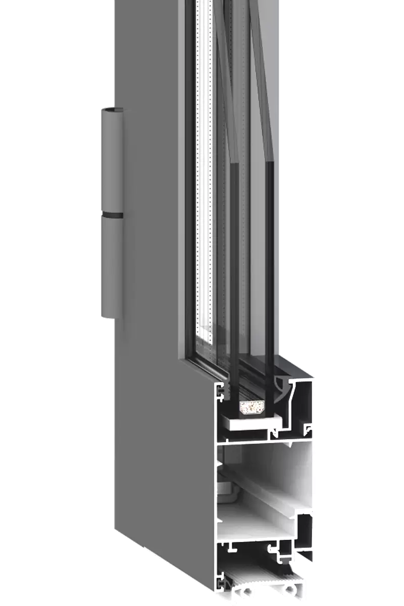

Технічні характеристики
Віконний

Дверний

Монтажна глибина рами
38мм
Монтажна глибина стулки
46мм
Система ущільнення притвору
двоконтурна
Скло
4, 6, 8, 10, 14, 16 мм
Фурнітура
Європаз V.01 “Тип 1”
Монтаж у фасадну систему
+
Матеріал ущільнення
синтетичний каучук, EPDM
Сплав
6063
Товщина заповнення
до 22 мм
товщина заповнення конструкцій
4-24 мм
Колір профілів
порошкове покриття за шкалою RAL
* Cистема забезпечена дренажно-вентиляційними отворами для відводу вологи і вентиляції фальца склопакета, які закриваються із зовнішнього боку пластиковими заглушками. Ця конструктивна особливість сприяє збільшенню терміну служби виробу.